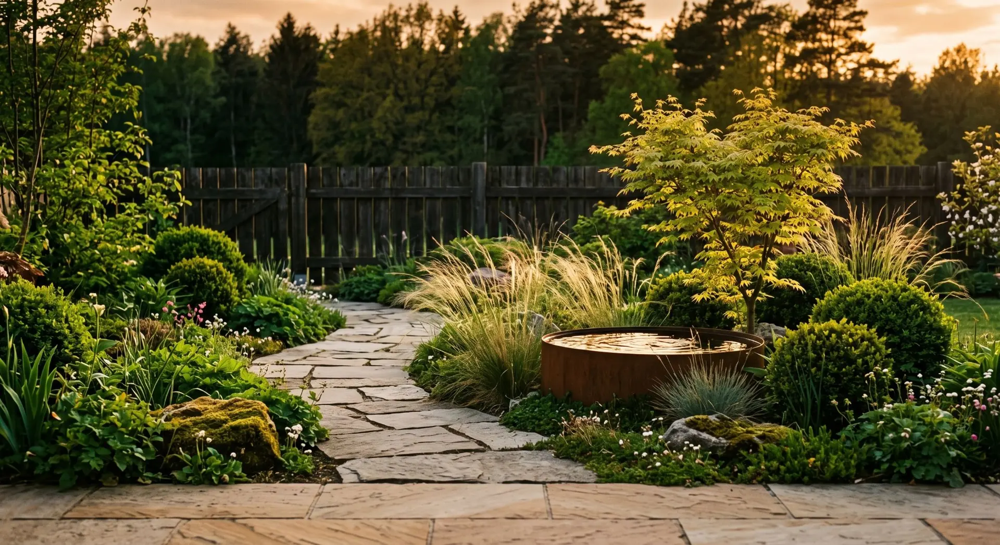

Photo d'un jardin paysager en été : allée de pierre, bassin en acier corten, érable du Japon, graminées et buis taillés. En survolant l'image, le même jardin apparaît en automne, l'érable devenu rouge.
Paysagiste à Angers depuis 2009
Créer votre jardin.Beau en toute saison.
Création, entretien à l'année, taille, arrosage. On dessine des jardins qui restent beaux de mars à février, pas seulement le jour de la livraison.
Passez la souris sur le jardin : le voici en octobre.
- 0
- jardins créés en Anjou
- 0
- contrats d'entretien à l'année
Métiers
Quatre gestes. Un seul jardinier référent.
-
Création
Plan à l'échelle, choix des végétaux selon votre sol et votre exposition, plantation et paillage. Garantie de reprise un an.
Sur devis après visite
-

Entretien
Tonte, désherbage sans chimie, taille des haies, ramassage des feuilles. Un passage par mois ou plus, le même jardinier à chaque fois.
Dès 45 € / heure, 50 % en crédit d'impôt
-
Taille & élagage
Taille douce en période de repos, jamais de rabattage brutal. Évacuation et broyage des branches, le broyat retourne à vos massifs.
Dès 180 € l'arbre
-
Arrosage
Goutte-à-goutte enterré et programmateur relié à la pluie : il ne se déclenche pas après une averse. Récupération d'eau de pluie possible.
Dès 1 200 € posé
Mars · avril · mai
Au printemps, on plante.
- Plantation des vivaces et des arbustes
- Paillage des massifs avant les premières chaleurs
- Remise en route de l'arrosage
Juin · juillet · août
L'été, on économise l'eau.
- Tonte haute, qui garde l'herbe verte plus longtemps
- Arrosage de nuit, au goutte-à-goutte
- Taille des haies après la nidification
Septembre · octobre · novembre
L'automne, on prépare.
- Ramassage des feuilles, compostées sur place
- Plantation des arbres : c'est la meilleure saison
- Division des vivaces et des graminées
Décembre · janvier · février
L'hiver, on taille.
- Taille des fruitiers et des arbres en repos
- Protection des plantes fragiles contre le gel
- Vidange de l'arrosage et du bassin
Crédit d'impôt
La moitié vous est remboursée.
L'entretien de jardin chez un particulier relève des services à la personne : 50 % des sommes versées reviennent en crédit d'impôt, dans la limite de 5 000 € de dépenses par an et par foyer. Même si vous n'êtes pas imposable.
La création de jardin et l'élagage d'arbres de grande taille n'y ouvrent pas droit. On vous le précise sur chaque devis.
- Crédit d'impôt
- 900 €
- Ce que ça vous coûte vraiment
- 900 €
- Par mois
- 75 €
Au-delà de 5 000 € par an, la part supplémentaire n'ouvre pas droit au crédit.
Visite gratuite
On passe voir. Sans engagement.
Une heure dans votre jardin pour comprendre le sol, la lumière et ce que vous en attendez. Le devis arrive sous huit jours, avec un croquis.
02 41 87 36 20